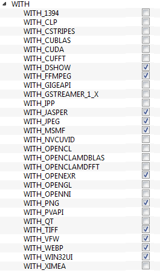
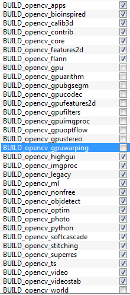

Install OpenCV-Python in Windows
Goals
In this tutorial
- We will learn to setup OpenCV-Python in your Windows system.
Below steps are tested in a Windows 7-64 bit machine with Visual Studio 2010 and Visual Studio 2012. The screenshots shows VS2012.
Installing OpenCV from prebuilt binaries
Below Python packages are to be downloaded and installed to their default locations.
- Python-2.7.x.
- Numpy.
- Matplotlib (Matplotlib is optional, but recommended since we use it a lot in our tutorials).
Install all packages into their default locations. Python will be installed to
C:/Python27/.After installation, open Python IDLE. Enter import numpy and make sure Numpy is working fine.
Download latest OpenCV release from sourceforge site and double-click to extract it.
Goto opencv/build/python/2.7 folder.
Copy cv2.pyd to C:/Python27/lib/site-packages.
Open Python IDLE and type following codes in Python terminal.
>>> import cv2 >>> print( cv2.__version__ )
If the results are printed out without any errors, congratulations !!! You have installed OpenCV-Python successfully.
Building OpenCV from source
Download and install Visual Studio and CMake.
Download and install necessary Python packages to their default locations
- Python 2.7.x
- Numpy
- Matplotlib (Matplotlib is optional, but recommended since we use it a lot in our tutorials.)
In this case, we are using 32-bit binaries of Python packages. But if you want to use OpenCV for x64, 64-bit binaries of Python packages are to be installed. Problem is that, there is no official 64-bit binaries of Numpy. You have to build it on your own. For that, you have to use the same compiler used to build Python. When you start Python IDLE, it shows the compiler details. You can get more information here. So your system must have the same Visual Studio version and build Numpy from source.
Another method to have 64-bit Python packages is to use ready-made Python distributions from third-parties like Anaconda, Enthought etc. It will be bigger in size, but will have everything you need. Everything in a single shell. You can also download 32-bit versions also.
Make sure Python and Numpy are working fine.
Download OpenCV source. It can be from Sourceforge (for official release version) or from Github (for latest source).
Extract it to a folder, opencv and create a new folder build in it.
Open CMake-gui (Start > All Programs > CMake-gui)
Fill the fields as follows (see the image below):
Click on Browse Source… and locate the opencv folder.
Click on Browse Build… and locate the build folder we created.
Click on Configure.

It will open a new window to select the compiler. Choose appropriate compiler (here, Visual Studio 11) and click Finish.
Wait until analysis is finished.
You will see all the fields are marked in red. Click on the WITH field to expand it. It decides what extra features you need. So mark appropriate fields. See the below image:
Now click on BUILD field to expand it. First few fields configure the build method. See the below image:

Remaining fields specify what modules are to be built. Since GPU modules are not yet supported by OpenCV-Python, you can completely avoid it to save time (But if you work with them, keep it there). See the image below:
Now click on ENABLE field to expand it. Make sure ENABLE_SOLUTION_FOLDERS is unchecked (Solution folders are not supported by Visual Studio Express edition). See the image below:

Also make sure that in the PYTHON field, everything is filled. (Ignore PYTHON_DEBUG_LIBRARY). See image below:

Finally click the Generate button.
Now go to our opencv/build folder. There you will find OpenCV.sln file. Open it with Visual Studio.
Check build mode as Release instead of Debug.
In the solution explorer, right-click on the Solution (or ALL_BUILD) and build it. It will take some time to finish.
Again, right-click on INSTALL and build it. Now OpenCV-Python will be installed.

Open Python IDLE and enter import cv2. If no error, it is installed correctly.
We have installed with no other support like TBB, Eigen, Qt, Documentation etc. It would be difficult to explain it here. A more detailed video will be added soon or you can just hack around.
Additional Resources
Exercises
If you have a windows machine, compile the OpenCV from source. Do all kinds of hacks. If you meet any problem, visit OpenCV forum and explain your problem.